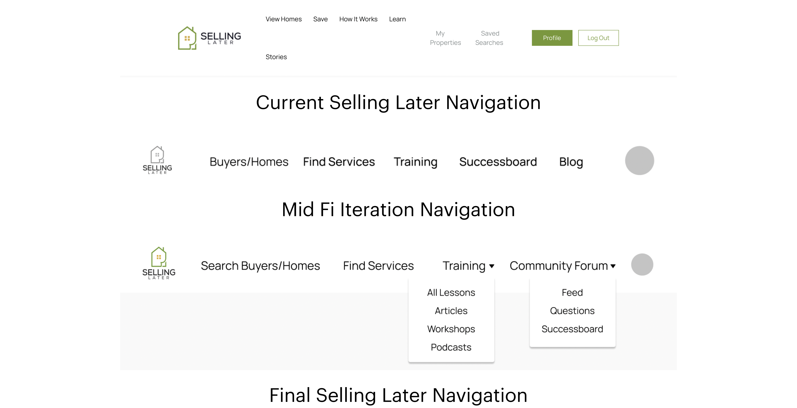

What did I do?
Lead a team of designers and collaborated with a project manager to design a web application for Seling Later.
This project was overseen by re:Bloom, a non profit organization that teachs small businesses owners and non-profit founders how to incorporate and use technology to expand their reach.
Who? When?
Team
- Alexis Elliot, Designer
- Rohan Butani, Project Manager
January 2022 - April 2022
What was the problem?
Unituitive navigation inhibited users from utilizing platform easily and accessing key features
Current platform does not allow Owner to make updates or changes
What was my solution?
Clear navigational structure allowed for easy usability
- Removed nested information to allow easy access
- Iterative testing ensure correct labels
- Drop down menus allowed for clearer structure of information
New web application allowed integration of new features
- Ability to work with Owner increased their own understanding of application
- Owner had complete control to integrate features into new application
Understanding the old site
Created a site map and feature board to clearly inventory all necessary information + features
By clearly displaying the information in a site map, we were able to start grouping the items and brainstorm labels for her new navigation bar.
Ms. Glich also had a list of new features that she wanted to integrate into the application. We incorporated these features high within the hierarchy of the menu to allow easy acess.

Laying down the structure
Created mid-fi prototype of entire application with new features
We were on a tight timeline for this project, so we jumped straight into prototyping. We knew that the labels on the navigation would need multiple iterations so we concept tested a mid fi prototype to gain feedback from users.
The basis for our first iteration came from a mood board that we created, which pulled from many common design components found in other websites and applications. This would hopefully allow the user to use recognition over recall when interacting with her new application.
Iterations and more testing
Iterated on navigational labels in response to feedback from users
Our biggest feedback came from our navigational headings (as we were expecting). We continued to iterate on our labels and tested them again in our second round of user testing. We added sub menus to allow users to explore the site and quickly understand what each page.  For our second round of user testing, we designed a hi-fi prototype with full interactivity to get a better understanding of the mental models associated with our users when full content and functionality were present.
100% of user testers would reccomend using the redesigned version of Selling Later